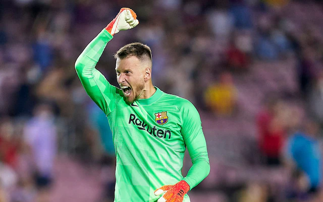

Humildes F.C. vs C.A. Maguila
1 - 0

La nueva temporada comenzó con un prometedor Humildes F.C. - C.A. Maguila. El conjunto simio mostró una tremenda mejoría en su nivel de juego y compitió la primera parte con un nivel digno de campeón.
No obstante, Humildes F.C. no ganó el título en unos Kellog's y supo aguantar el arreón inicial, hasta adelantarse con un autogol en la segunda parte, lo que sacó a Maguila del partido y permitió a los locales dormir el encuentro y cerrar el 1-0.